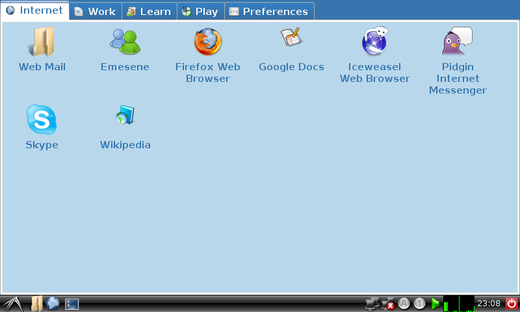

English
Português
Español
正體中文
LXDE.org
About
Download
Screenshots
Blog
Wiki
Forum
IRC
Join us
Home
›
Image Galleries
›
Screenshots
LXLauncher
Easy to use with netbooks
Screenshots
Original
Thumbnail
Download
LXDE
Debian GNU/Linux 7.6
USB/CD Image, 32 bit version
USB/CD Image, 64 bit version
Fedora LXDE Spin
USB/CD Image, 32 bit version
USB/CD Image, 64 bit version
Lubuntu 14.04
USB/CD Image, 32 bit version
USB/CD Image, 64 bit version
USB/CD Image, Mac 64 bit version
LXDE
LXDE developers mailing list
PCManFM developers mailing list
LXDE project page at SF.net
PCManFM project page at SF.net
Design Project
Translation Project
Translation project mailing list
OS with LXDE
ArchLinux
Baltix
CRUX
Debian
Fedora
Foresight
Gentoo
Pardus
Mandriva
Sidux
VectorLinux
Zenwalk
Ubuntu
TinyMe
PCLinuxOS
OpenSolaris
SuSE
Android
Slackware
more
 The LXDE website is licensed
under a Creative Commons
Attribution-Share Alike 3.0 license.
The LXDE website is licensed
under a Creative Commons
Attribution-Share Alike 3.0 license.
The LXDE website is licensed
under a Creative Commons
Attribution-Share Alike 3.0 license.
The LXDE website is licensed
under a Creative Commons
Attribution-Share Alike 3.0 license.